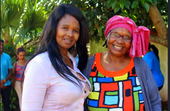

Vukuzakhe creche situated at Kwadlangezwa is one of the facilities that I adopted through Linzwa Foundation. My team and I normally support children and families from disadvantaged areas. Vukuzakhe is one of them. Here we brought a group of pastors to donate food and clothes for the children.
